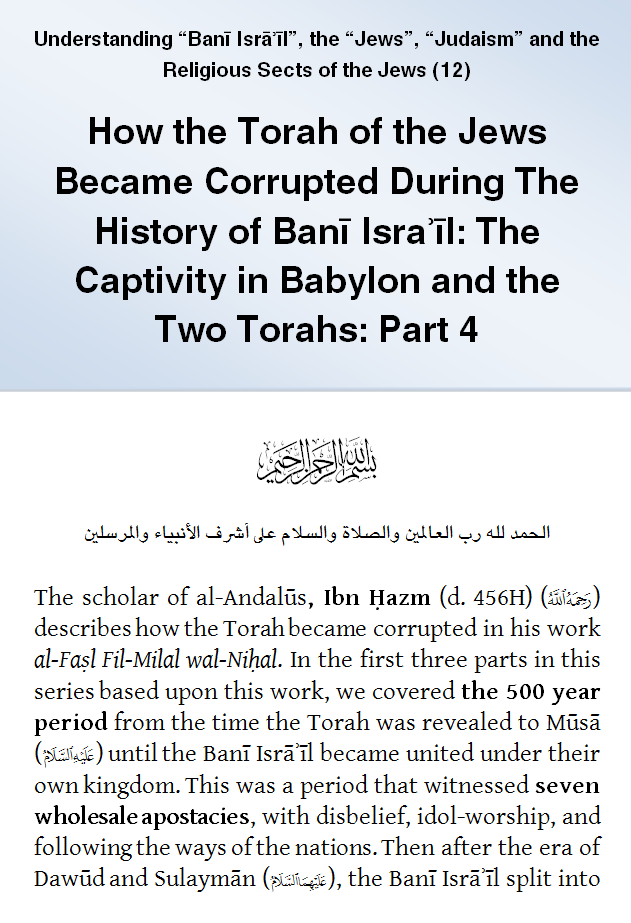
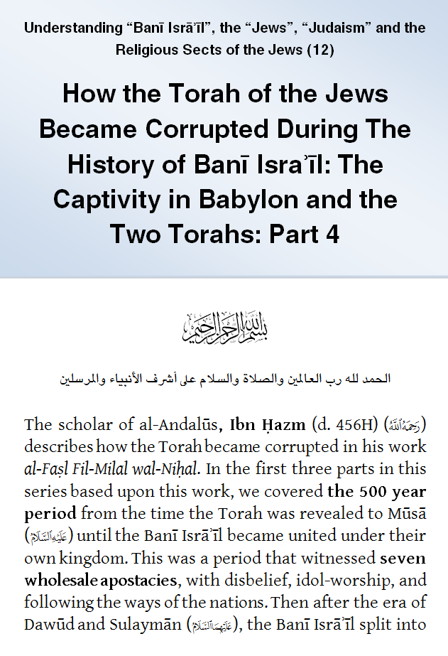

IslamMoses.Com
Posted by Abu Iyaad on Friday, September, 28 2018 and filed under Torah
Key topics: Torah • Revelation • Ezra

|
IslamMoses.Com |
|
How the Torah of the Jews Became Corrupted: Part 4: The Captivity in Babylon and the Two Torahs Posted by Abu Iyaad on Friday, September, 28 2018 and filed under Torah Key topics: Torah • Revelation • Ezra 
|